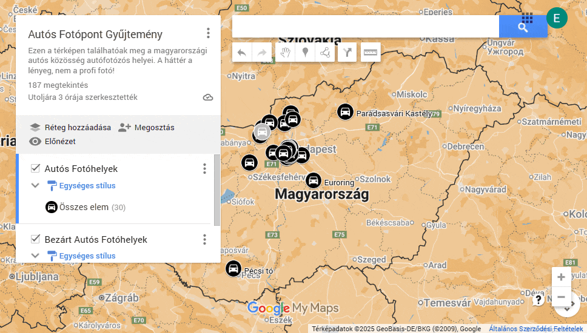

Üdvözöllek az Autós Fotópont Gyűjteménynél! Ez egy nyílt projekt, amelynek célja, hogy összegyűjtse a Magyarországon található jó helyeket autók fényképezésére. A Magyarországi autós fotó helyszín gyűjtemény közösségével együttműködve, a gyűjtemény folyamatosan bővül, és mindenki hozzájárulhat új helyek hozzáadásával.
Kattints a térképen található ikonokra, hogy megtekintsd a helyszínek részleteit. Ezután a bal-felső panelben megnyithatod és végignézheted a képeket teljes felbontásban.
Ha te is szeretnél részese lenni, kérjük, használd a gombot a jobb felső sarokban található ceruza ikonra kattintva. Szükséged lesz egy Google-fiókra, hogy szerkeszthesd a gyűjteményt.
Ha már kaptál szerkesztési engedélyt, akkor kattints ide a szerkesztő megnyitásához.
Ha némi segítségre van szükséged a szerkesztő használatához, akkor nézd meg az alábbi animációt:
Ha fel szeretnél tölteni egy képet, de nem tudod pontosan hol is készítetted, akkor próbáld meg ezt a weboldalt, hátha benne van a képben a készítés helyadata. Itt a "Choose Files" gomb lenyomása után kiválasztott képeid megjelennek a térképen (ha van bennük hely). A kiválasztott képekre kattintva megjelenik a "Copy GPS" gomb, mellyel másolhatod a koordinátáit, amit a szerkesztő keresőjébe beilleszthetsz, hogy rögtön odaugorjon.